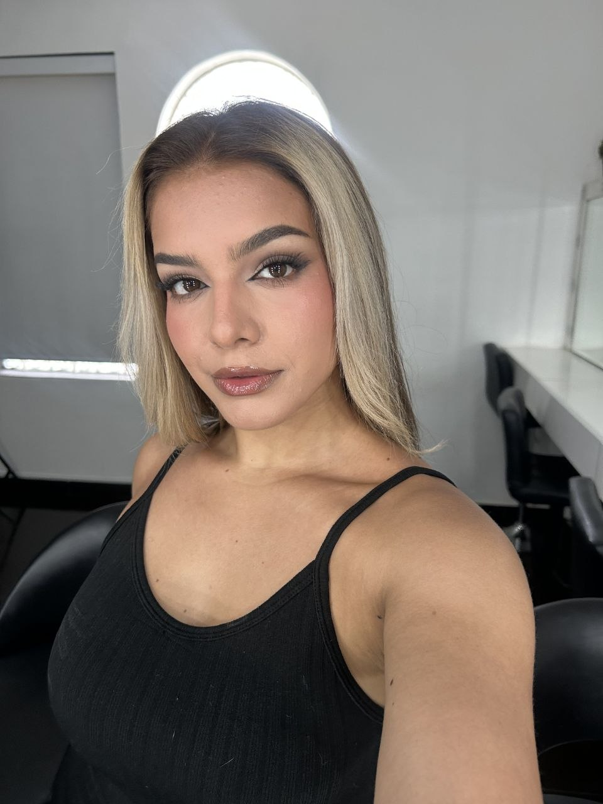
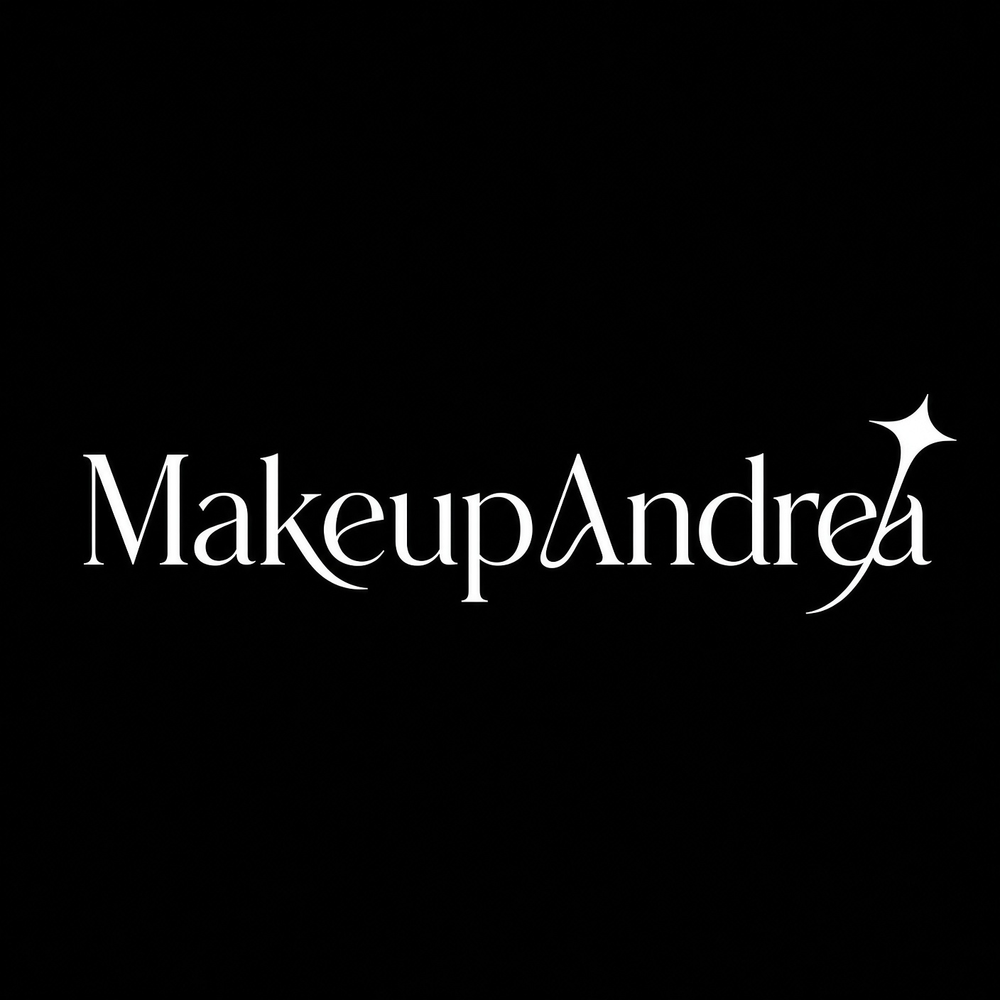

2019 · Venezuela
Empezó por amor a la belleza
Maquilladora profesional venezolana. Empecé en 2019, primero de manera autodidacta y luego con estudios formales, incluyendo la academia Epic (Colombia) y una escuela de maquillaje virtual.

SOBRE MÍ
¡Hola! Si llegaste aquí es porque te interesa saber quién está detrás de todo esto, hace 7 años he descubierto mi amor por la belleza y he logrado capacitarme para lograr técnicas de perfeccionamiento. He decidido dedicarme al 100% a mi emprendimiento porque me apasiona lo que hago. Mi misión: empoderarte para tu ocasión especial.

2019 · Venezuela
Maquilladora profesional venezolana. Empecé en 2019, primero de manera autodidacta y luego con estudios formales, incluyendo la academia Epic (Colombia) y una escuela de maquillaje virtual.
![[ALT_PENDIENTE]](assets/img/sobre-mi/cap-02.jpg)
Hoy · Academia MUS
Desde hace tres años formo parte de la academia MUS (Makeup Studio), donde trabajo como maquilladora y docente. Mi especialidad abarca el maquillaje nupcial, social y artístico, además de sesiones fotográficas. Como docente, transmito a nuevas generaciones las técnicas y estándares que definen mi trabajo.
![[ALT_PENDIENTE]](assets/img/sobre-mi/cap-03.jpg)
Formación continua
Mi formación continua incluye capacitaciones con referentes internacionales como Sergio Antón (España), Etienne Ortega (Estados Unidos), César Mushi (México) y Christian Matta —mi mentor, reconocido como uno de los principales maquilladores de Lima, Perú—, además de especialistas de Brasil, Venezuela y Colombia.
![[ALT_PENDIENTE]](assets/img/sobre-mi/cap-04.jpg)
Mi forma de trabajar
Esta formación me ha permitido integrar técnicas de distintos países en un estilo propio y versátil.
Elegimos juntas el look que más te representa.